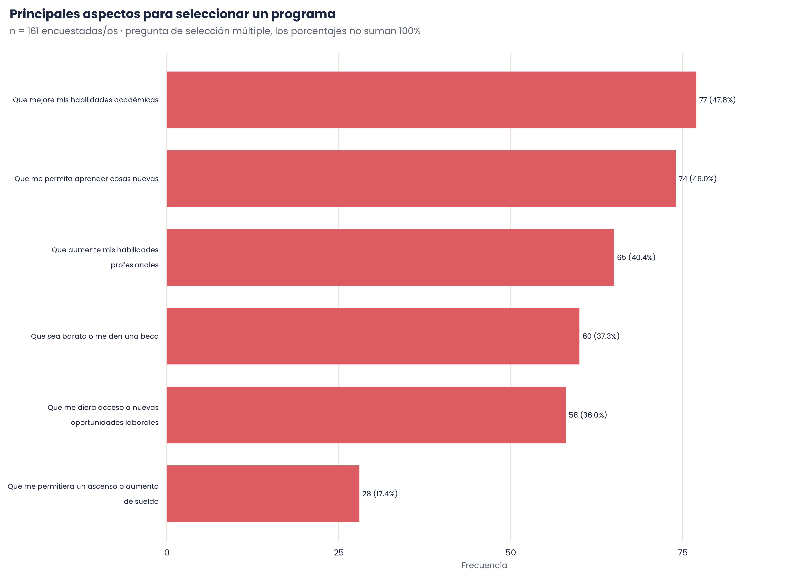
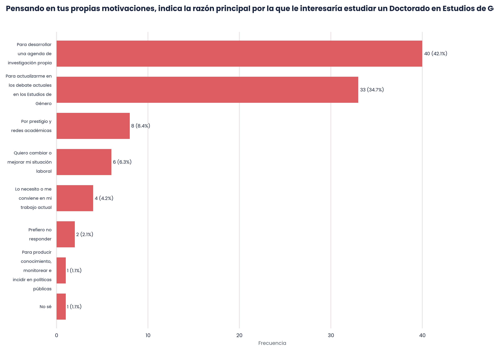
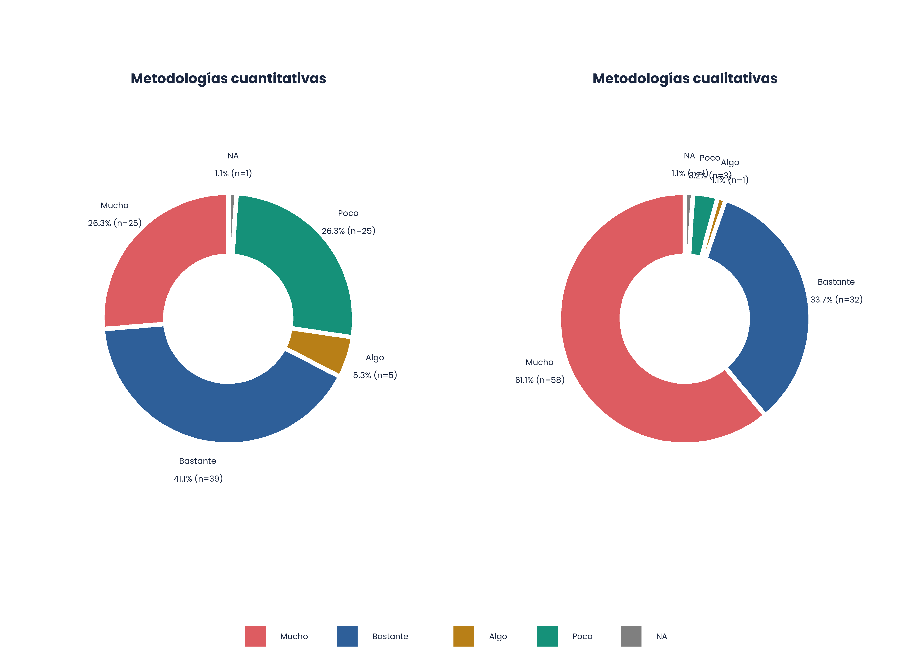
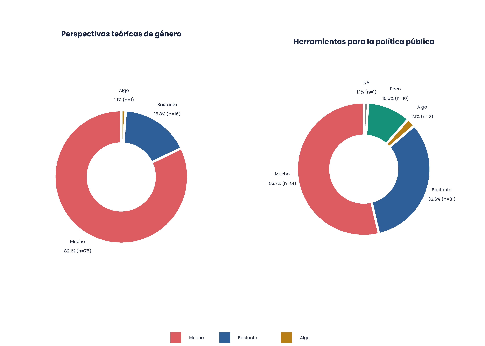
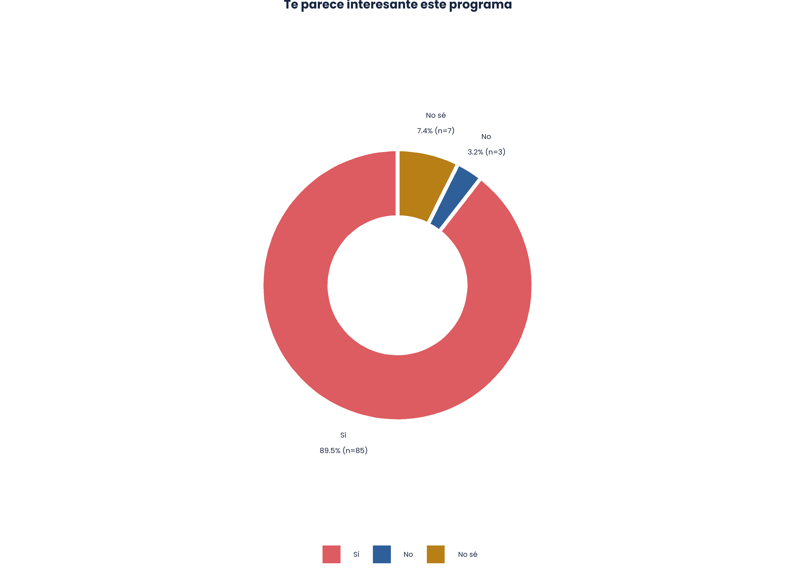
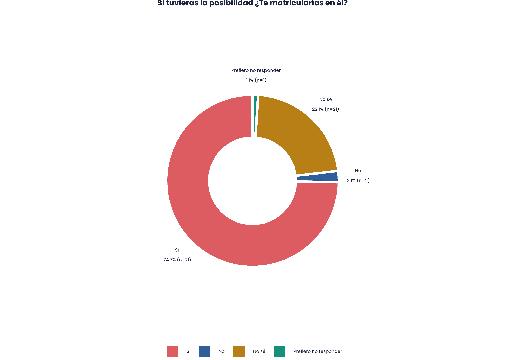
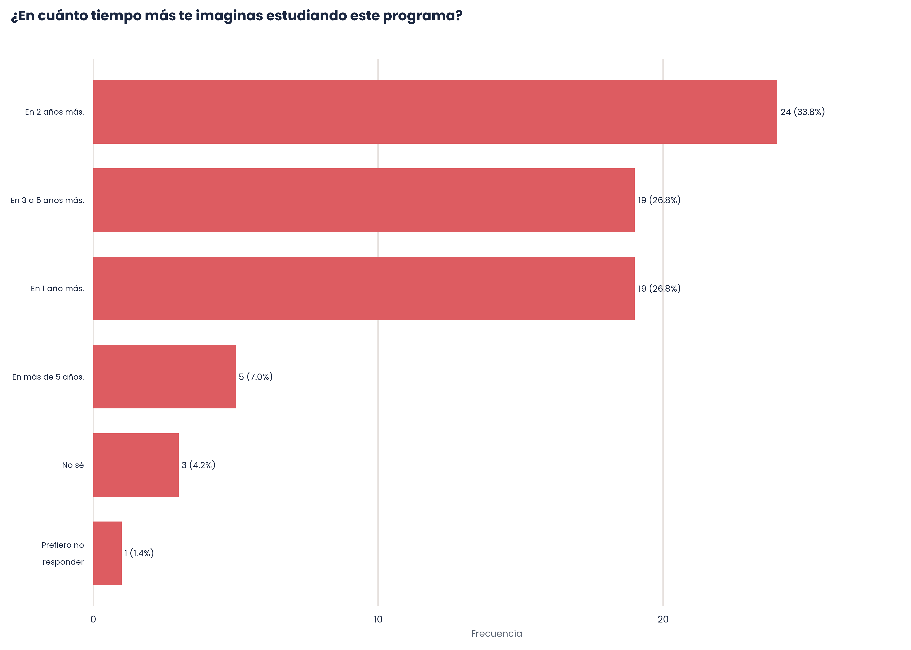
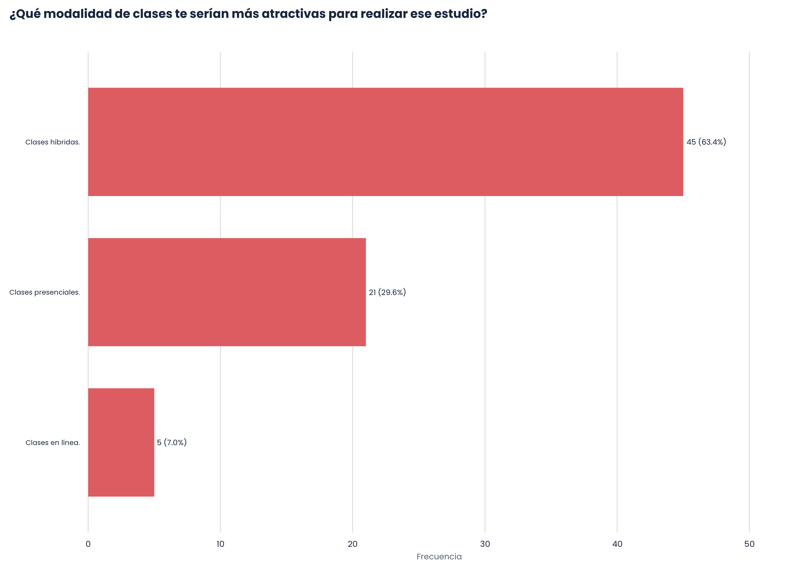
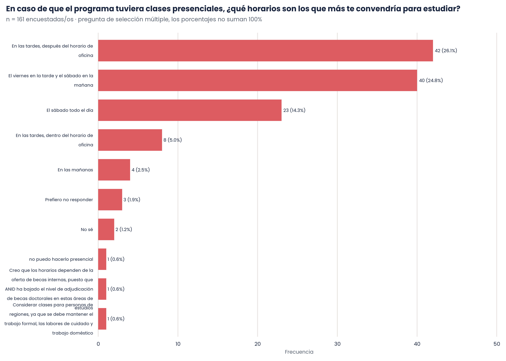

Módulo 3
Preferencias Doctorado en Estudios de Género
Aspectos importantes para seleccionar un porgrama de Doctorado en Estudios de Género
Motivación para estudiar un Doctorado en Estudios de Género

Elementos que debería privilegiar el programa en sus cursos


Temáticas que deberían ser abordadas por los cursos
Programa propuesto
Interés

Matrícula

Tiempo

Modalidad de clases

Horarios de clases
